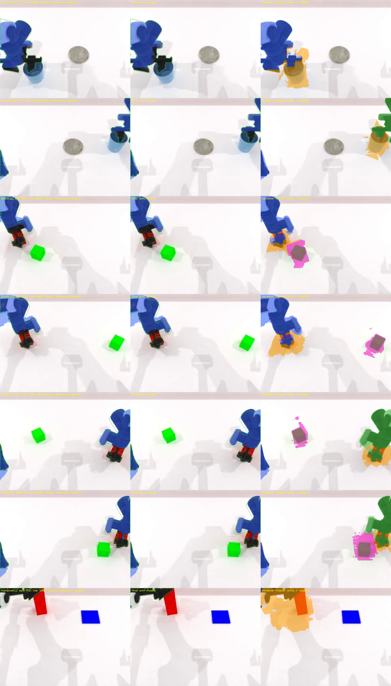
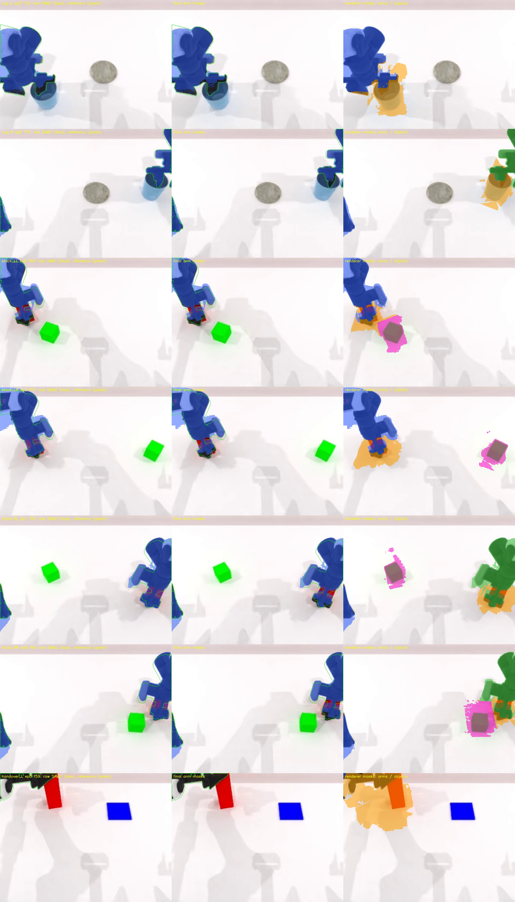
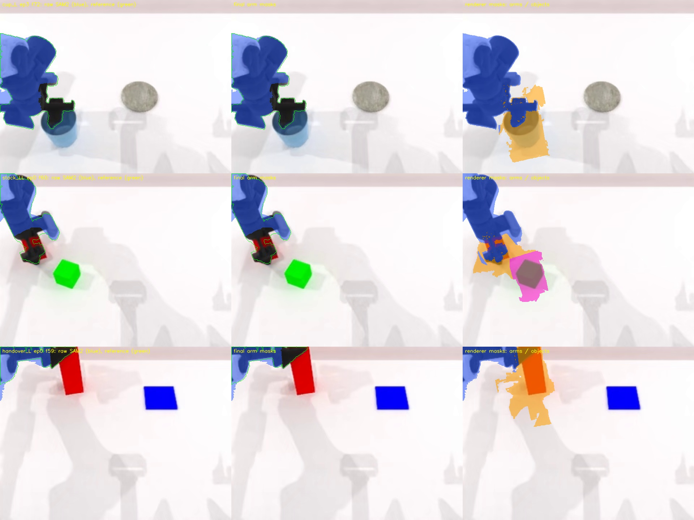
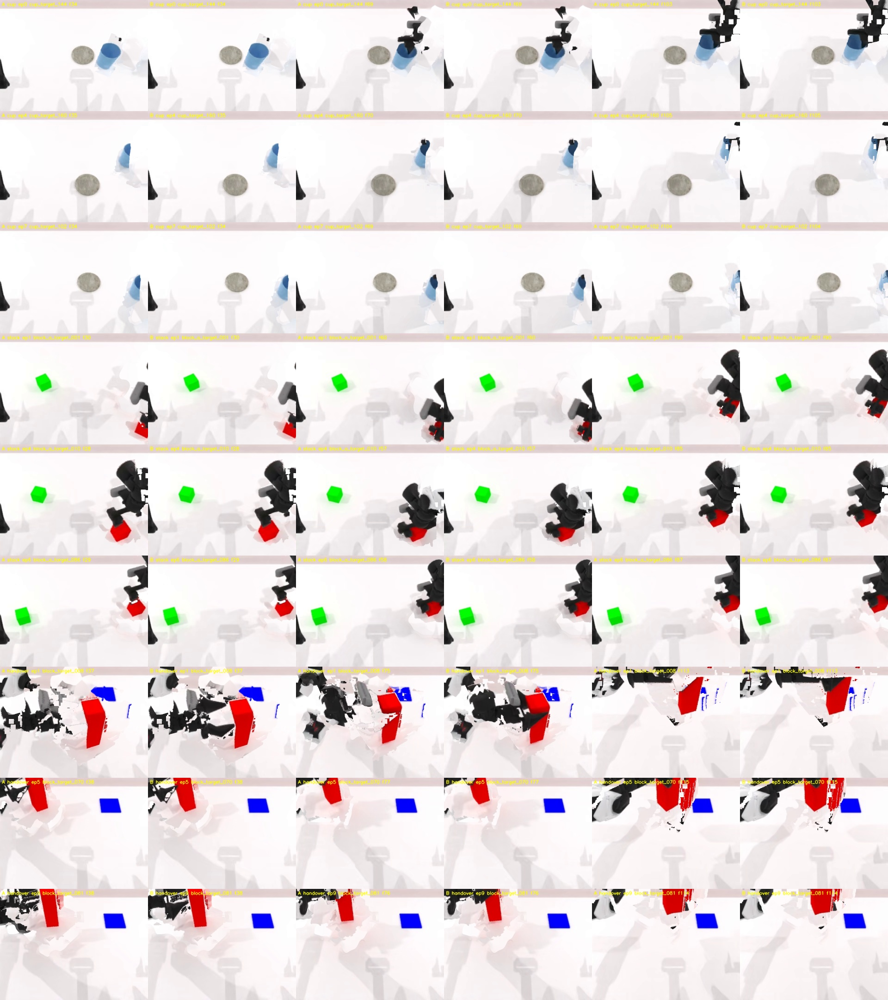
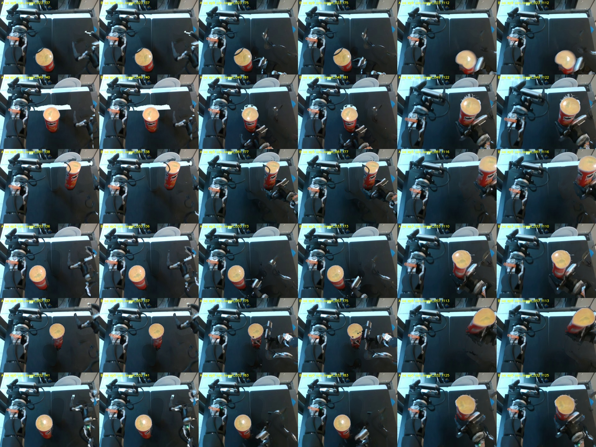
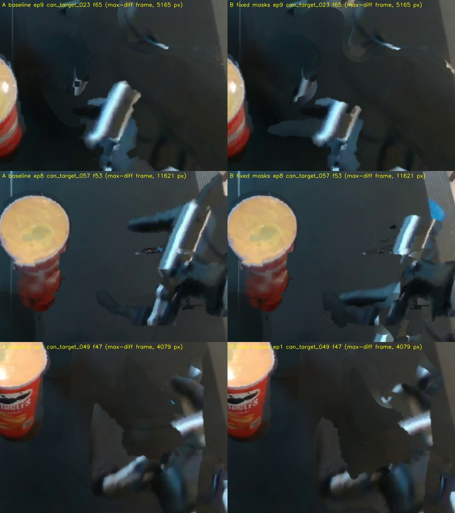
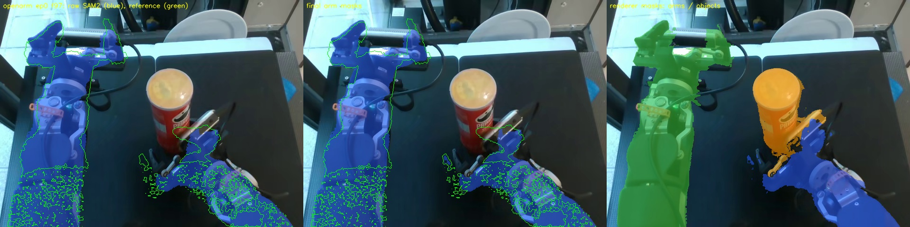

R05: arm / gripper segmentation – images
Numbers and conclusions: R05_gripper_segmentation.md. A = baseline masks, B = prompt cut by depth + repair. Green line = true robot silhouette (RoboTwin, true camera).
1. Masks before (A): raw SAM2 | final arm mask | masks the renderer uses

2. Masks after (B), same camera

3. Masks with the true camera, old rules (PA) and new rules (PB)

4. Rendered frames, RoboTwin: A left, B right of each pair (not visibly better)

5. Rendered frames, OpenArm at 11–12 cm shifts: A left, B right

6. OpenArm zoom at the frame where A and B differ most

7. OpenArm masks (reference = fitted camera, not truth)
